1. import ubuntu-cloud-images
date: 2023-02-05
http://mirrors.ustc.edu.cn/ubuntu-cloud-images/jammy/
http://mirrors.ustc.edu.cn/ubuntu-cloud-images/jammy/20221219/jammy-server-cloudimg-amd64.ova
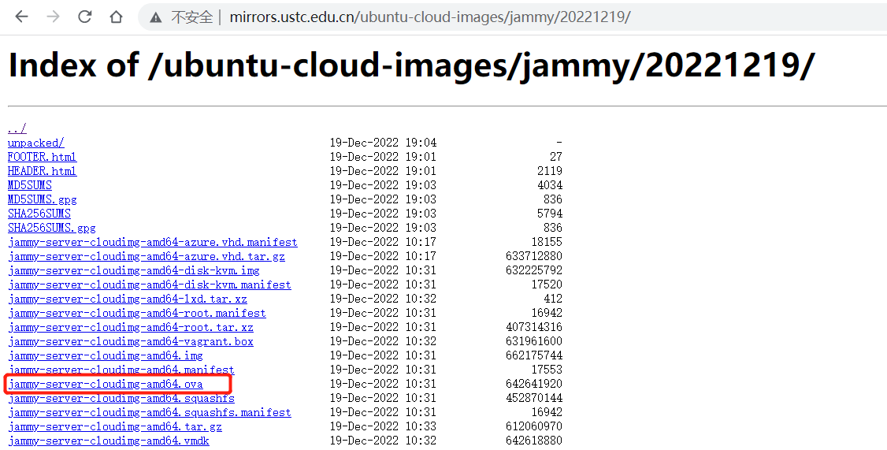
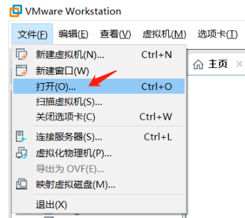
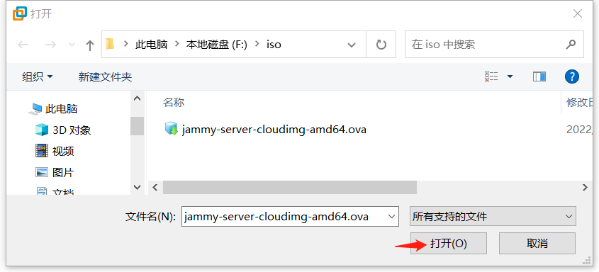
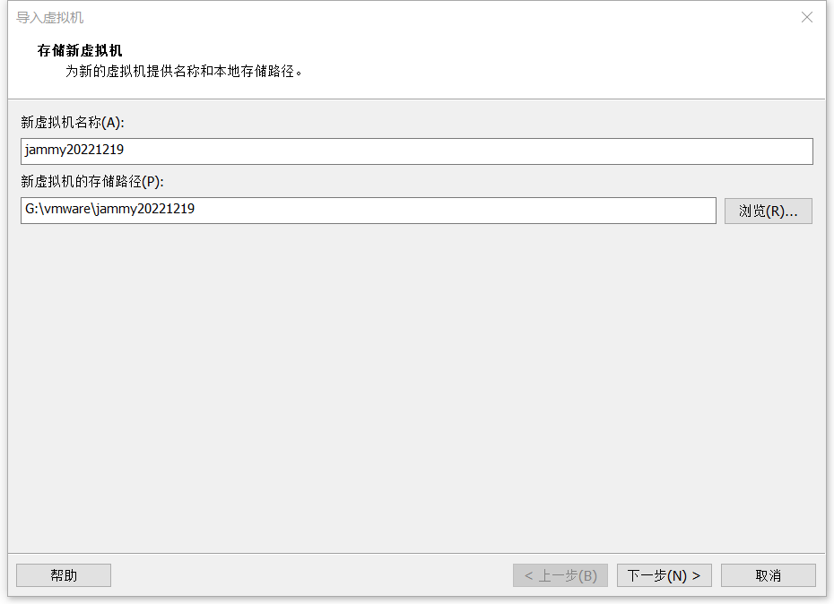
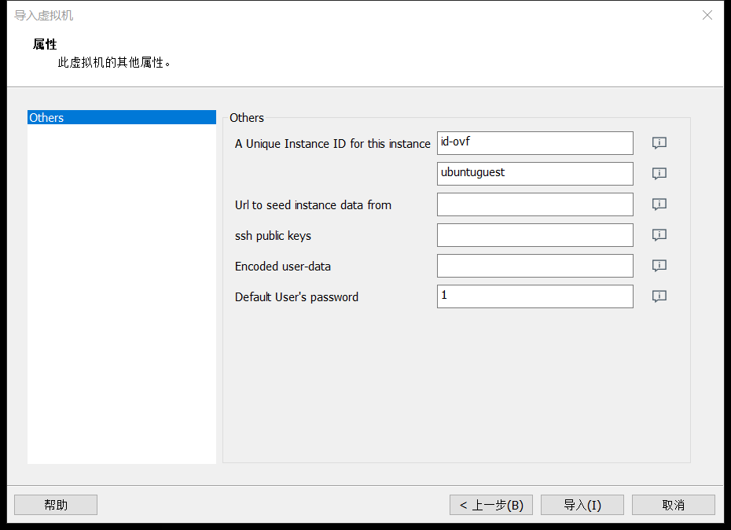
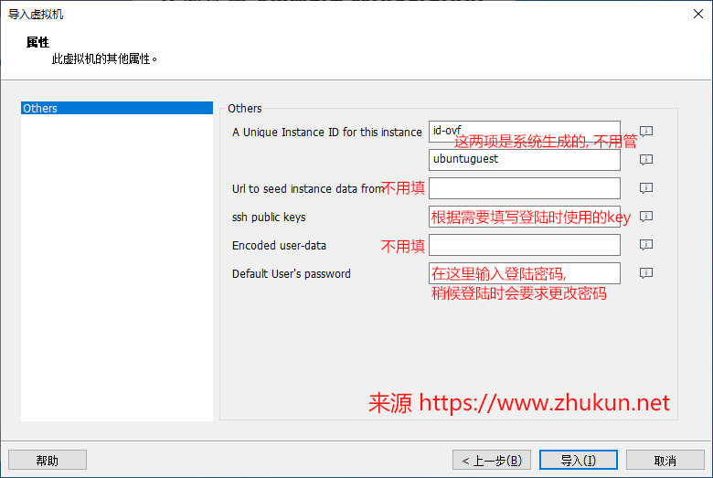
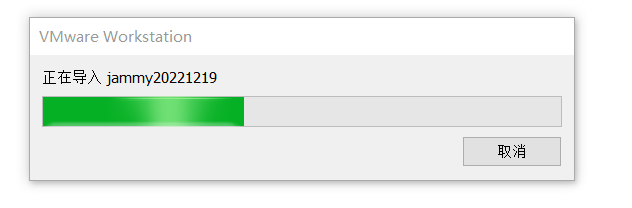
等待虚拟机导入完成，自动启动，完成初始化,
大约需要耐心等待1-3分钟时间，然后login：
大约需要耐心等待1-3分钟时间，然后login：
大约需要耐心等待1-3分钟时间，然后login：
默认登陆用户名是ubuntu, 密码即为刚才设定的密码. 首次登陆会要求修改密码。
关闭虚拟机 jammy20221219
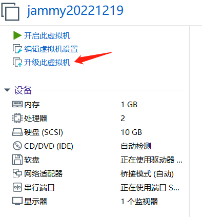
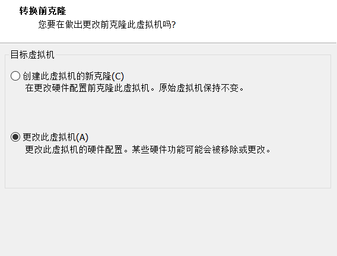
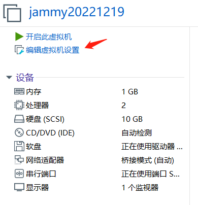
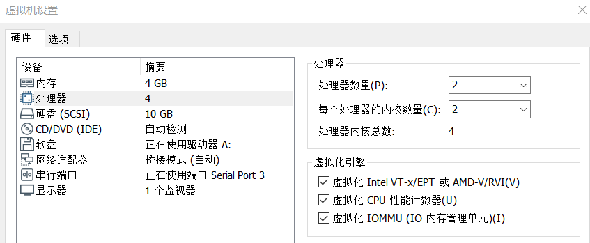
导入的虚拟机磁盘只有10G，扩到100G
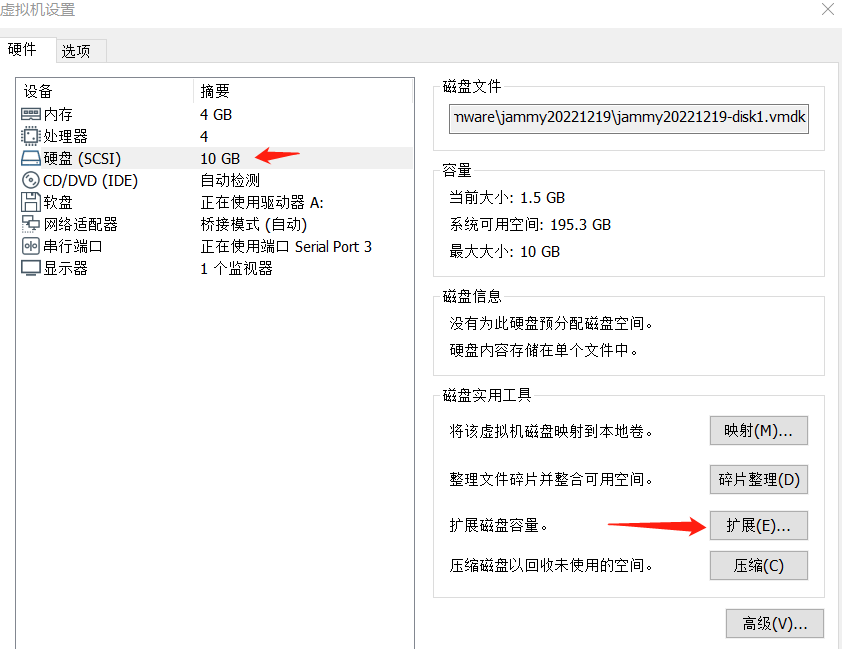
 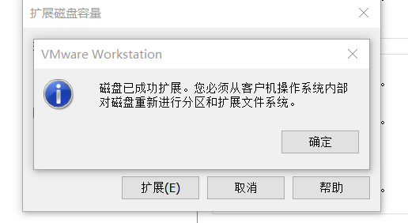
删除CD等无用设备，进入系统，fdisk—> resize
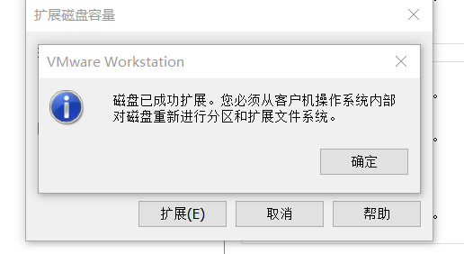
删除CD等无用设备，进入系统，fdisk—> resize
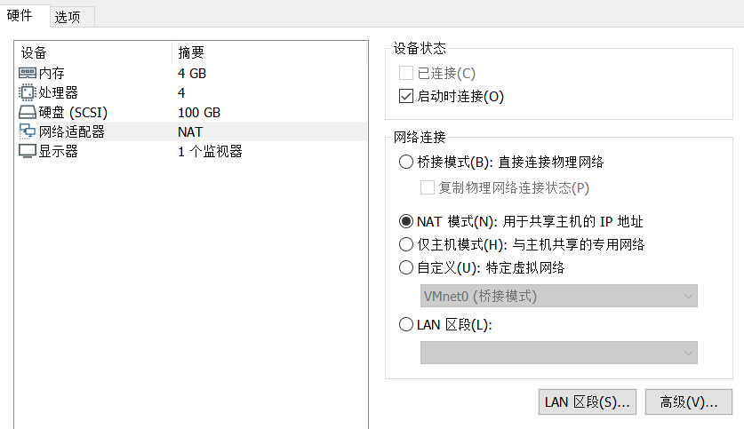
设置ssh远程登录：
vi /etc/ssh/sshd_config # 修改如下配置, 将no改为yes
PasswordAuthentication yes
PermitRootLogin yes # permit root login
systemctl restart sshd
hostnamectl set-hostname jammy
ln -sf /usr/share/zoneinfo/Asia/Shanghai /etc/localtime
sed -i 's/.*swap.*/#&/' /etc/fstab
cat <<EOF >> /etc/sysctl.conf
net.ipv4.ip_forward = 1
net.bridge.bridge-nf-call-ip6tables = 1
net.bridge.bridge-nf-call-iptables = 1
vm.swappiness=0
EOF
sysctl -p
cat >> /etc/systemd/system.conf << EOF
DefaultLimitNOFILE=65536
DefaultLimitNPROC=65536
DefaultLimitMEMLOCK=infinity
EOF
cat << EOF >> /etc/security/limits.conf
* soft nproc 65536
* soft nofile 65536
root soft nproc 65536
root soft nofile 65536
EOF
vi /etc/default/motd-news
ENABLED=0
#vi /etc/netplan/01-netcfg.yaml
nano /etc/netplan/01-netcfg.yaml
network:
version: 2
renderer: networkd
ethernets:
ens3:
addresses:
- 10.1.5.2/21
nameservers:
addresses: [114.114.114.114, 8.8.8.8]
routes:
- to: default
via: 10.1.1.1
netplan apply
sed -i 's/archive.ubuntu.com/mirrors.ustc.edu.cn/g' /etc/apt/sources.list
sed -i 's/security.ubuntu.com/mirrors.ustc.edu.cn/g' /etc/apt/sources.list
apt update
apt remove cups -y
apt autoremove -y
apt update
apt upgrade -y
apt install chrony -y
systemctl enable chronyd --new
chronyc sources -v
fdisk -l 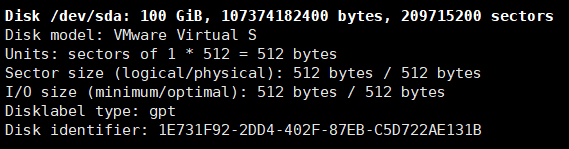 df -hT 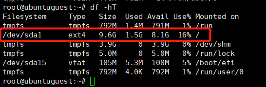 fdisk /dev/sda
root@ubuntuguest:~# fdisk /dev/sda
Command (m for help): p
...
Device Start End Sectors Size Type
/dev/sda1 227328 20971486 20744159 9.9G Linux filesystem
/dev/sda14 2048 10239 8192 4M BIOS boot
/dev/sda15 10240 227327 217088 106M EFI System
...
Command (m for help): d
Partition number (1,14,15, default 15): 1
Partition 1 has been deleted.
Command (m for help): n
Partition number (1-13,16-128, default 1):
First sector (34-209715166, default 227328):
Last sector, +/-sectors or +/-size{K,M,G,T,P} (227328-209715166, default 209715166):
Created a new partition 1 of type 'Linux filesystem' and of size 99.9 GiB.
Partition #1 contains a ext4 signature.
Do you want to remove the signature? [Y]es/[N]o: y
The signature will be removed by a write command.
Command (m for help): p
Disk /dev/sda: 100 GiB, 107374182400 bytes, 209715200 sectors
Disk model: VMware Virtual S
Units: sectors of 1 * 512 = 512 bytes
Sector size (logical/physical): 512 bytes / 512 bytes
I/O size (minimum/optimal): 512 bytes / 512 bytes
Disklabel type: gpt
Disk identifier: 1E731F92-2DD4-402F-87EB-C5D722AE131B
Device Start End Sectors Size Type
/dev/sda1 227328 209715166 209487839 99.9G Linux filesystem
/dev/sda14 2048 10239 8192 4M BIOS boot
/dev/sda15 10240 227327 217088 106M EFI System
Filesystem/RAID signature on partition 1 will be wiped.
Partition table entries are not in disk order.
Command (m for help): w
The partition table has been altered.
Syncing disks.
resize2fs /dev/sda1
root@ubuntuguest:~# resize2fs /dev/sda1
resize2fs 1.46.5 (30-Dec-2021)
Filesystem at /dev/sda1 is mounted on /; on-line resizing required
old_desc_blocks = 2, new_desc_blocks = 13
The filesystem on /dev/sda1 is now 26185979 (4k) blocks long.
root@ubuntuguest:~# df -hT
Filesystem Type Size Used Avail Use% Mounted on
tmpfs tmpfs 792M 1.4M 791M 1% /run
/dev/sda1 ext4 97G 1.5G 96G 2% /
tmpfs tmpfs 3.9G 0 3.9G 0% /dev/shm
tmpfs tmpfs 5.0M 0 5.0M 0% /run/lock
/dev/sda15 vfat 105M 5.3M 100M 5% /boot/efi
tmpfs tmpfs 792M 4.0K 792M 1% /run/user/0